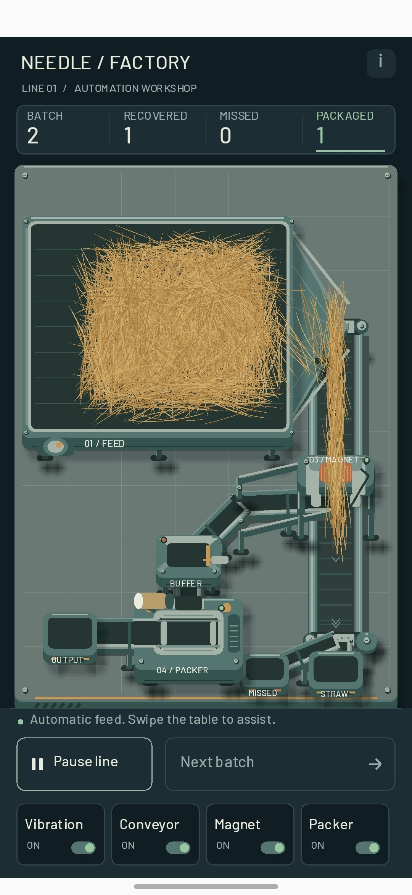
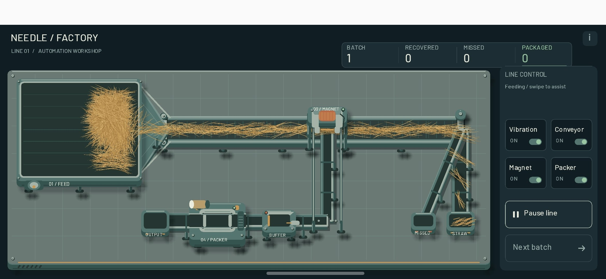

006 — Солома, пучки и горизонтальные сомнения
В прошлой версии солома была какой-то ватой, что ли. Завод уже выглядел приличнее, а материал на конвейере всё ещё напоминал содержимое подушки. Решил, что пора вернуть соломе её профессиональную идентичность.
Переделал соломинки. Теперь пучок можно описать так: несколько соломинок, соединённых ближе к середине под разными случайными острыми углами. Звучит как инструкция по сборке крайне неудобной метлы, но именно такой беспорядок мне и был нужен. Отдельные соломинки вместо причёсанных прядей.
А ещё я таки сделал горизонтальный режим. На этот раз завод действительно разложился по широкому экрану, а не просто встал узкой колонкой посередине. Технически — маленькая победа. Но мне не понравилось. Оказывается, «я смог это сделать» и «мне нравится результат» — две разные галочки.
Скриншоты


006 — Straw, Bundles, and Landscape Doubts
In the previous version, the straw looked like cotton wool, or something along those lines. The factory was looking better, but the material on the conveyor still resembled the contents of a pillow. Time to give the straw its professional identity back.
I reworked the stems. Here's how I'd describe a bundle now: several straw stems joined near their centers at different random acute angles. It sounds like instructions for assembling a deeply impractical broom, but that was exactly the kind of disorder I wanted. Individual stems instead of neatly combed strands.
And I finally made landscape mode. This time, the factory actually spread out across the wide screen instead of standing in a narrow column in the middle. Technically, a small victory. But I didn't like it. Apparently, “I managed to make it” and “I like the result” are two different boxes to tick.